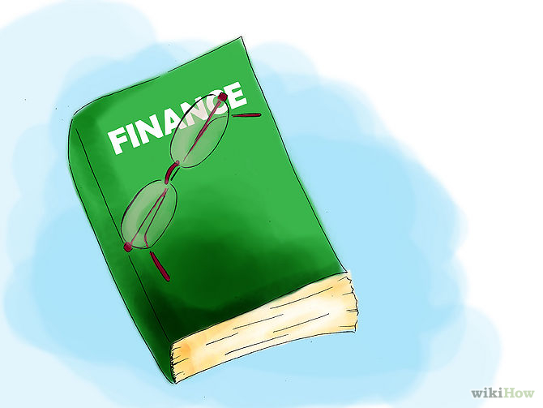
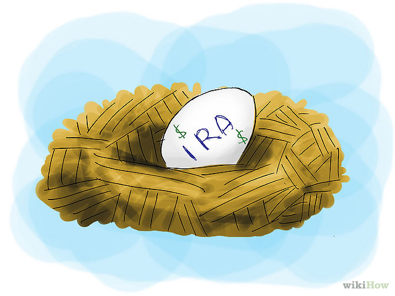
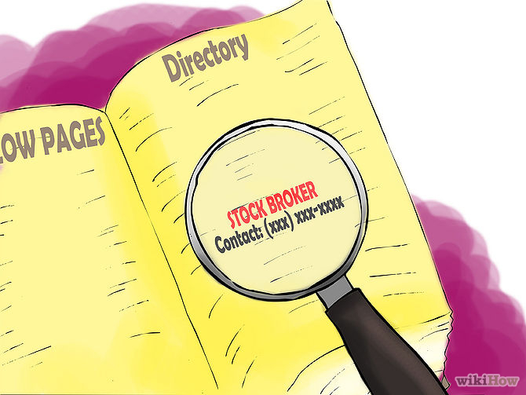

Being a billionaire takes more than a bunch of zeroes. The world of investments and capital is tumultuous and strange to most people, but that doesn't mean that there's a barrier to you becoming a billionaire. Working your way up from little or nothing to a life in the lap of luxury is the classic American narrative, but you've got to learn to create opportunities for yourself, invest wisely, and hold onto your wealth to make it work for you.
Part 1: Creating Opportunities
- 1–1. Study up. People do not become billionaires by accident. Demystify as many of the variables as you can before you assemble a plan, such as interest rates, tax brackets, dividends and so on. Take a class online or at a university on finance, read books about investing and know the rules. Study finance and entrepreneurship to learn how to identify market and consumer needs and develop business models based on those needs. Cultivating in-demand skills like computer science and technology is a critical way to get in the front door of new media and new money. Read about successful billionaires and how they made their fortunes, such as Warren Buffett or Jon Huntsman, Sr. Being wise with your money is the surest way to amass more of it.
- 1–2. Start Saving Money. It takes money to make money. Take a certain amount of money out of your paycheck as soon as you get paid and put it in a savings account, to be used for future investments or to simply collect interest. Decide what percentage of your earnings you can afford to spare and start there - as little as $20 per paycheck will start to make a difference over three or four years. If you decide to put that money toward a high-risk investment, then you're only risking what you can afford to lose.
- 1–3. Start an Individual Retirement Account (IRA). Available from most financial institutions, IRAs are customizable financial plans that you can set up to start saving for the future. If you want to end up saving an amount of money that ends with nine zeroes, you need to do this as soon as possible. You'll accrue interest on your savings and elect to take an amount of risk in investments to make money off the money you have. Depending on the financial institution, you may need to invest a minimum amount of money to get it started, or you may not. Research your options and talk to your financial advisor.
- 1–4. Pay off your credit card debt. It's hard to get ahead if you have debts of any kind hanging over your head. Student loans and credit card debt needs to be paid off as soon as possible. The average annual percentage rates vary anywhere between 20% and 30% which means the balance will end up keep growing if you don't get on top of it sooner rather than later.
- 1–5. Make a five-year plan. Calculate a conservative estimate of how much money you could manage to save over 5 years. Depending on the amount, decide what the best use of your money should be, whether it's investing, starting a business or simply allowing the money to continue to collect interest. Keep your plan urgent. Make sure your ideas stay at the front of your mind by writing them down and referring back to them regularly. If you have a hard time staying interested in projects, write down reminders about your plan and put them somewhere you go every day - for instance, on the bathroom mirror or the dashboard of your car.
Part 2: Investing
- 2–1. Buy real estate. A common way to make more money is to invest in real estate. Property will generally appreciate in value over time, and might give you a good return on your investment. Your investment can be flipped, rented, or developed. Be wary of investing in an artificially inflated market, and make sure that you can easily pay the monthly mortgage. If you don't know much about the 2008 sub prime mortgage crisis in the United States, it might be a good idea to read up on it and learn from a few cautionary tales.
- 2–2. Invest in business. Starting your own business or buying into one can be a solid way to make money over a long term. Create or choose a company that offers a product or service that you would buy yourself, and put your time and money toward improving it. Become knowledgeable about the industry you wish to go into and learn to differentiate between good and bad business investments.Investing in green energy and computer technology is a good plan for the future. These businesses are projected to grow over the next decades, meaning that getting in on the ground floor now would be a smart investment.
- 2–3. Buy and sell stocks. The stock market can be a great place to grow your fortune. Watch the markets carefully before you start to buy and pay attention to which stocks do well; gathering this information will help you make smart purchases in the future. Once you invest, understand that most stocks appreciate over the long term. Ride out small decreases in value if you can and take the occasional risk. Dividend reinvestment plans (DRPs) and direct stock purchase plans (DSPs) bypass brokers (and their commissions) by buying directly from companies or their agents. These are offered by more than 1,000 major corporations, and you can invest as little as $20-30 per month and can buy fractional shares of stocks.
- 2–4. Put your money into Money Market Accounts (MMAs). These accounts have a higher minimum account than a regular savings account, but accrues twice the rate of interest of a savings account. High-yield MMAs are somewhat risky--your ability to draw on the money and your ability to affect its investments are limited--but it's a good way to let your money grow by doing, essentially, nothing.
- 2–5. Invest in government bonds. Bonds are interest certificates issued by government agencies, in particular the Treasury, which offer no risk of default. Because the government controls the printing presses and can print whatever money is required to cover the principal, these are relatively safe investments and a good way to diversify your money. Talk to a broker you've developed a relationship and cultivate a bond-buying plan over the next several years to diversify your portfolio and keep your money in different places.
Part 3: Maintaining Wealth
- 3–1. Consult brokers for good advice. Your money is as good as the advice you receive about it. If you start to accrue a considerable amount of wealth, you're not going to want to spend all your time huddled in front of a monitor watching the stocks change by fractions of a percentage. You're going to want to be out living your life. Surround yourself with good financial advisors and brokers that you trust who will work for you to keep your accounts swelling with excess funds.
- 3–2. Diversify your portfolio and investments. Don't keep all your money in one place. By diversifying your portfolio and investing in stocks, real estate, mutual funds, bonds, and other investments recommended by your brokers, you're both ensuring that your money will be isolated in different markets that behave differently. If you end up making a risky investment in ShamWow absorbent towels and it ends up tanking, at least you've still got a considerable amount of money in other ventures.
- 3–3. Make smart financial decisions. The Internet is full of penny stock schemes and get-rich-quick hokum that preys upon the ignorant and forces gullible people into making bad financial decisions. Do the research and commit to a lifetime of investing and making money. There's no such thing as an overnight billionaire. When in doubt, be conservative with your investments. If you've got your money diversified wisely, letting interest accrue and letting the markets fluctuate will probably be a smarter decision in the long run. Less is more. Rather than actively monkeying around with your money, wait it out.
- 3–4. Know when to get out. At a certain point, you're going to have to know when to pull the trigger and get out of something before it collapses from under you. If you've surrounded yourself with smart brokers, listen to their advice, but also know when to listen to your gut. If you see an opportunity to sell big and make a profit, do it. Profit is profit. Even if that stock ends up appreciating in the next year, you've still made some coins that you can reinvest elsewhere. There's no one way to invest.
- 3–5. Act the part. If you're going to be a billionaire, you've got to act like one. Surround yourself with moneyed and cultured people, picking up advice and know-how from the experienced. Cultivate interests in fine art, fine dining, and travel. Consider buying a yacht or any of the other standard trappings of the wealthy. There's a distinction between "old money" and "new money." New money is typically a derogatory term for people who've just made a lot of cash quickly and live ostentatiously, spending lots of their money and living a lavish lifestyle. If you want to hold onto your wealth, learn from old money and ascend to the stratosphere.
Tips
- —Learn to take calculated risks. Your money will earn interest while it sits in the bank, but it will earn a lot more if you use it in smart, somewhat risky ways.
- —Be creative. If you want to start a business or invest in one, try to come up with an angle that no one else has considered.
- —A proper time management and routine can add a proper framework of your work. Saving time and utilizing it for the other work would add as gain to your money.